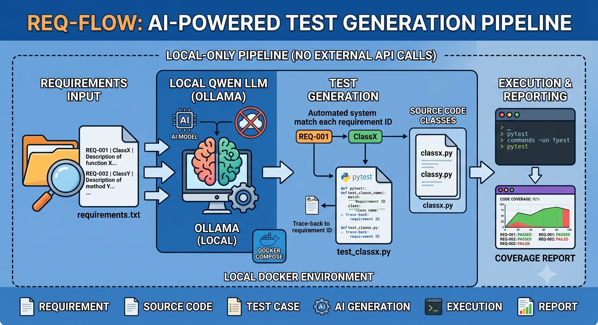
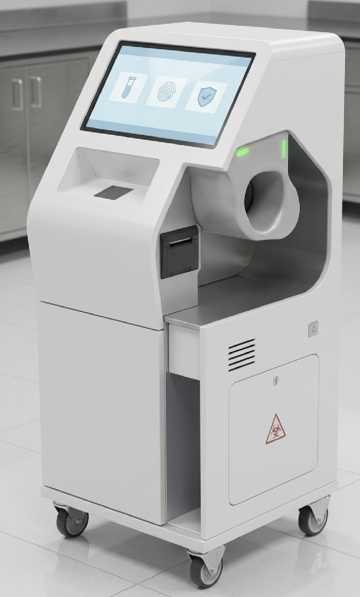
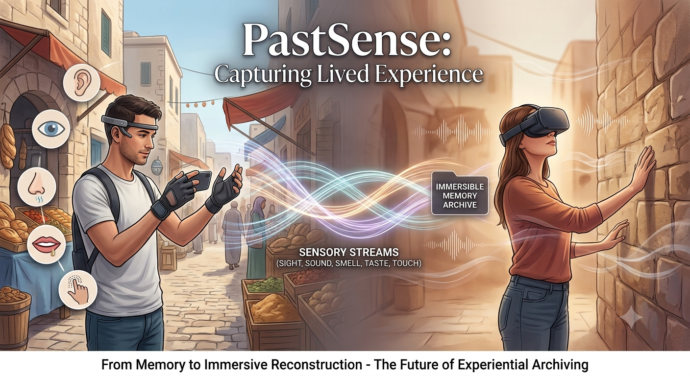

Half-baked, and still baking
Tinkerings
Things I think about but haven't fully built: some are sketches that never left the notebook, others got as far as a prototype before I moved on. Unlike Works, nothing here is finished, and that's the point.
These are deliberately unfinished. Each one is tagged as a Concept (an idea, not yet built) or a Prototype (something I actually built, at least partially).

req-flow: Requirements Go In, Tests Flow Out
An AI-powered test generation pipeline: a plain-text requirements file feeds a local Qwen LLM (via Ollama), which generates pytest test cases traced back to each requirement ID, against the source classes they describe. Requirements are pipe-separated (ID, class name, description); the pipeline matches each one to its class, generates a test file, and runs it with coverage reporting. Everything runs locally through Docker Compose, no external API calls.

COVID-X: A Robotic Rapid-Test Platform
A self-service kiosk that takes a finger-prick blood sample, runs it through a standard lateral-flow antibody strip, and reads the result with a color sensor and computer vision instead of a human eye, removing healthcare workers from the highest-exposure step of mass testing. Results would sync to a cloud dashboard for regional case tracking, with patient intake handled by voice so the whole interaction stays hands-off. Never built past this diagram, but pairing a simple color-change diagnostic with automated, objective interpretation is an idea I still think has legs beyond COVID testing.

PastSense: Reconstructing Memory as Experience
An idea for capturing lived experience (sight, sound, smell, taste, touch) richly enough to reconstruct it later as an immersive environment, rather than just a photo or video. The starting point was personal: my dad describing his childhood village in a way no photograph could capture, the smell of the air, the ambient sound, the texture of the place. Most of human history predates cameras entirely, let alone anything richer, so almost all of it is unrecoverable except through the imprecise medium of memory itself. PastSense imagines going the other direction: recording present experience with enough sensory fidelity that it could be replayed, or even reconstructing historical or literary scenes as immersive VR for learning. No implementation here, just the premise, but I think about it whenever someone describes a place I'll never get to see.
More of these are on their way. This page will grow.